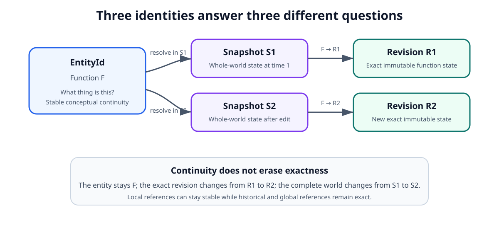
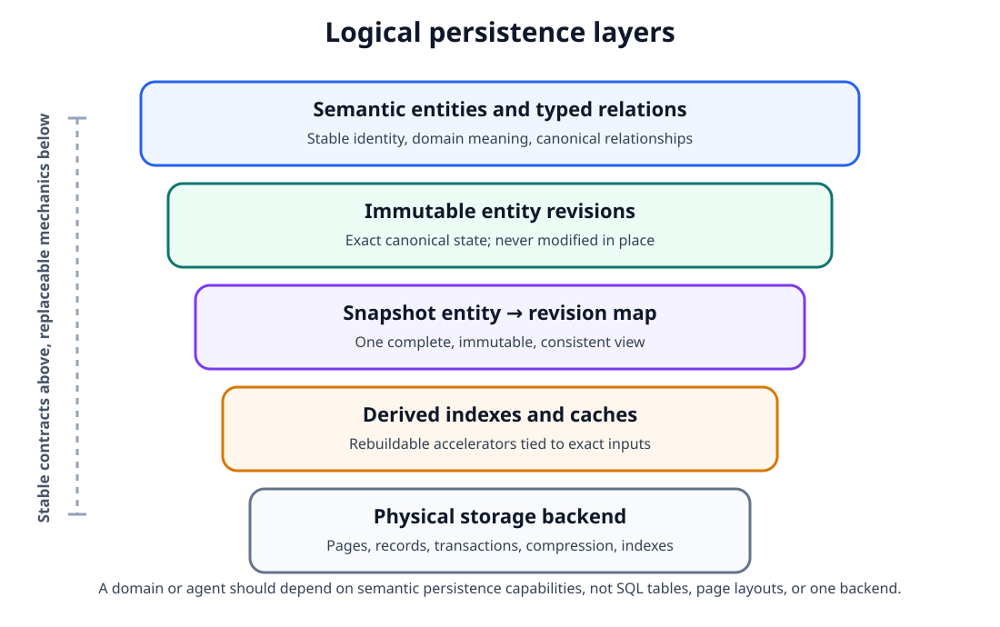
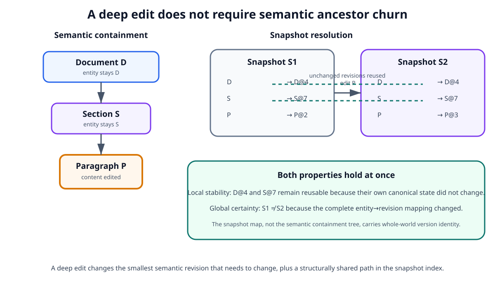
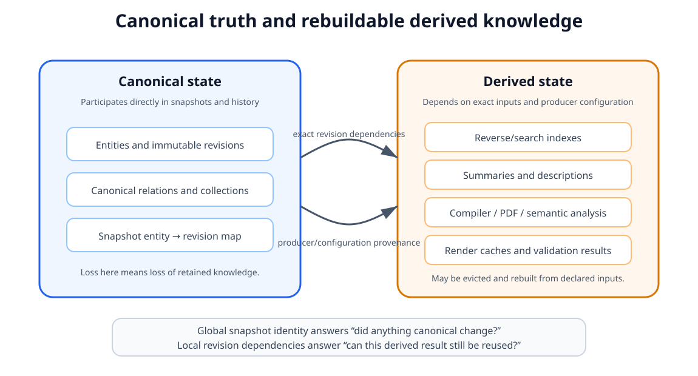
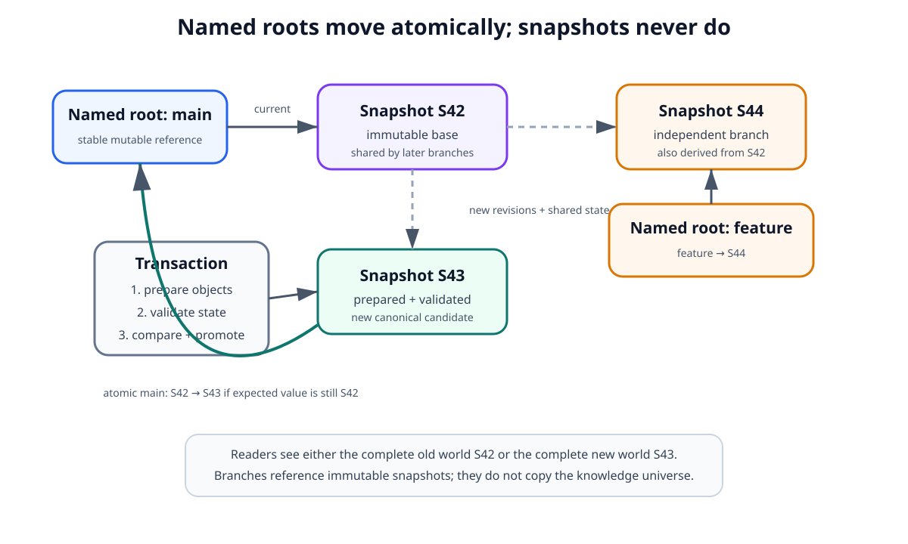
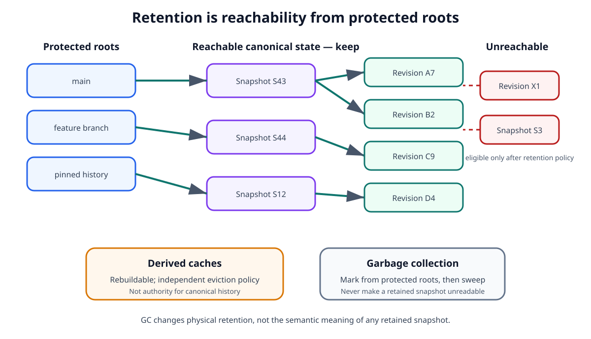

Persistence and Storage Model¶
1. Purpose¶
Scriberig needs a persistence model that can store one universal knowledge system without coupling that system to agents, files, a specific domain, or a specific database engine.
The storage layer must support source code, documents, PDFs, sessions, branches, decisions, styles, migrations, derived analysis, and future domains through the same fundamental persistence rules.
This document defines those rules.
The central principle is:
Persist exact immutable state locally, preserve stable conceptual identity separately, and represent each complete consistent world with an immutable snapshot.
The storage layer must make the following simultaneously possible:
- exact historical references;
- local incremental updates;
- global change detection;
- structural sharing;
- deterministic caching;
- branching and concurrent work;
- reliable recovery;
- efficient querying;
- eventual garbage collection;
- replacement of the physical storage backend without changing the knowledge model.
This document intentionally does not prescribe SQL tables, Rust structs, page layouts, serialization libraries, or one database engine. Those belong in lower-level designs.
2. Relationship to the Knowledge Model¶
The universal knowledge model distinguishes three questions:
What thing is this? -> Entity
What exact state is that thing in? -> Revision
What exact state is the whole world? -> Snapshot
Persistence must preserve those distinctions.
Conceptually:
EntityId
|
| resolved in
v
Snapshot ----------------------+
| |
v |
RevisionId |
| |
+-- canonical properties |
+-- canonical relations ----+
+-- canonical collections
An entity is a stable semantic handle.
A revision is immutable exact content.
A snapshot is an immutable mapping that determines which revision of each entity is visible in one consistent state of the knowledge universe.
These concepts must not collapse into one recursively changing identifier.

Figure 1. Stable entity identity, exact revision identity, and global snapshot identity.
The important distinction is that the entity answers which conceptual thing is being discussed, a revision identifies one exact immutable state of that thing, and a snapshot selects the exact revisions that together form one complete world. An edit can therefore preserve semantic continuity while still producing exact local history and a new global state.
3. Storage Is a Platform Capability¶
The persistence system must be useful without any agent runtime.
A consumer may use it only as:
- an immutable revision store;
- a versioned graph database;
- a document backend;
- a source-code database;
- a history and snapshot system;
- an application database with semantic entities;
- a substrate for custom domains.
Therefore the storage layer must not contain assumptions about:
- prompts;
- models;
- tool calls;
- agent context windows;
- chat interfaces;
- one particular source language;
- one particular document format.
Agents, sessions, source code, PDFs, and other domains are users of the persistence model rather than privileged parts of it.
4. Logical Persistence Layers¶
The persistence model should be understood as several logical layers even if one physical database stores all of them.
+------------------------------------------+
| Semantic entities and typed relations |
+------------------------------------------+
| Immutable entity revisions |
+------------------------------------------+
| Snapshot entity -> revision map |
+------------------------------------------+
| Derived indexes and caches |
+------------------------------------------+
| Physical storage backend |
+------------------------------------------+
The layers have different guarantees.
4.1 Semantic entity layer¶
Provides stable conceptual identity and domain meaning.
4.2 Revision layer¶
Stores exact immutable canonical states.
4.3 Snapshot layer¶
Defines one complete consistent view by resolving entities to revisions.
4.4 Derived layer¶
Stores rebuildable indexes, reverse relations, search structures, cached renders, summaries, compiler information, and other accelerators.
4.5 Physical backend¶
Stores bytes, pages, records, transactions, and indexes using a concrete database implementation.
Higher layers must not depend on incidental details of lower layers.

Figure 2. Logical persistence layers and their dependency direction.
The reader should notice that semantic and domain code depends on persistence capabilities, not on a particular table layout or storage engine. This separation lets Scriberig replace or optimize physical storage, indexes, chunking, and cache strategies without changing the universal knowledge model exposed above them.
5. Immutable Revisions¶
Canonical revisions are immutable after creation.
An edit never changes an existing revision in place.
Instead:
R1 remains valid while retained by a reachable historical state.
This rule applies regardless of domain.
Examples:
Paragraph P -> new paragraph revision
Function F -> new function revision
Branch B -> new branch revision
Style S -> new style revision
Decision D -> new decision revision
Logical immutability is mandatory even if the physical backend internally compacts or rewrites storage pages.
6. Revision Identity and Deduplication¶
A revision identity should identify exact canonical content.
The storage model should support content-derived or otherwise deterministic revision identity so that equal canonical values can be recognized as equal states.
Conceptually:
This enables natural deduplication.
If the same canonical revision is produced twice, the store may reuse the existing revision rather than persist another logical copy.
This property supports:
- structural sharing;
- exact cache keys;
- branch convergence;
- reproducible references;
- inexpensive reuse of unchanged knowledge.
The exact hashing algorithm and canonical encoding are implementation decisions, but the persistence model depends on one invariant:
A revision identifier must never silently refer to different canonical content.
7. Stable Entities Are Separate from Revision Identity¶
A revision identifies exact state, but applications often need continuity across change.
Therefore stable entity identity is maintained separately.
Example:
A consumer asking for F in the current snapshot means:
Resolve the conceptual function F to the revision visible now.
A consumer asking for F at R1 means:
Read the exact historical state R1.
This prevents two undesirable extremes:
- mutable objects whose historical meaning changes under existing references;
- content hashes being used as the only application-level identity, causing every edit to appear to create an unrelated conceptual object.
The persistence layer must support both continuity and exactness.
8. Snapshots¶
A snapshot is an immutable consistent mapping from semantic entities to exact revisions.
Conceptually:
Snapshot S
Entity A -> Revision A7
Entity B -> Revision B2
Entity C -> Revision C19
Entity D -> Revision D4
A canonical change produces a new snapshot.
The previous snapshot remains valid.
The snapshot is the unit used when exact global consistency matters.
Examples include:
- an agent workspace base;
- a validation run;
- a projection render;
- a semantic diff;
- a branch point;
- a merge base;
- reproducible analysis;
- synchronization between clients.
9. The Snapshot Map Is Not the Semantic Containment Tree¶
The persistence structure used to identify a complete snapshot must not be confused with the semantic graph itself.
Consider semantic containment:
If the paragraph text changes, the containing section and document remain the same conceptual entities.
The persistence model should therefore avoid requiring every semantic ancestor to receive a new conceptual identity merely because a deep descendant changed.
Instead, a snapshot can maintain an independent persistent mapping:
For example:
After changing only the paragraph:
The document and section revisions remain unchanged if their own canonical state did not change.
This gives Scriberig two desirable properties at once:

Figure 3. Local semantic stability combined with global snapshot certainty.
This is the central answer to the change-propagation problem. A deep edit need not recreate the conceptual identity or revision of every semantic ancestor; only entities whose own canonical state changed need new revisions. The top-level snapshot still changes intentionally, giving the system a compact fingerprint that says the complete canonical world is different.
10. Structural Changes and Content Changes Are Different¶
The storage model should preserve the distinction between changing an entity and changing a structure that refers to that entity.
Example content change:
The section containing P may not need a new revision because it still contains the same conceptual entity P.
Example structural change:
Now the section's own structural state changed, so the section receives a new revision.
This distinction reduces unnecessary change propagation and gives diffs more useful semantics.
11. Persistent Snapshot Representation¶
Although a snapshot conceptually maps many entities to revisions, creating a new snapshot must not require copying the entire map.
The physical representation should support persistent structural sharing.
Conceptually:
Snapshot S1
|
+-- mostly shared mapping structure
Snapshot S2
|
+-- mostly the same mapping structure
+-- changed path for Entity P
A small semantic change should create only a small amount of new snapshot-index state.
Suitable implementation techniques may include persistent trees, tries, Merkle structures, copy-on-write indexes, or equivalent mechanisms.
The specific data structure belongs in lower-level design.
The Level 1 requirement is:
Snapshot creation must scale with the changed portion of the entity-to-revision mapping rather than require duplication of the whole knowledge universe.
12. Global Snapshot Identity Is Intentionally Sensitive¶
The identity of the top-level snapshot should change whenever canonical state visible through that snapshot changes.
This is not undesirable invalidation. It is the purpose of the snapshot identity.
A snapshot identity provides a compact answer to:
If two snapshot identities are equal, they represent the same complete canonical state.
If they differ, at least one canonical mapping differs.
This supports fast decisions such as:
- whether a client is current;
- whether an agent is still operating on its original base;
- whether synchronization is required;
- whether a three-way merge is needed;
- whether two branches converged;
- whether a validation result applies to the same complete state.
The snapshot identity is therefore intentionally coarse.
It must not be used as the default key for fine-grained caches.
13. Fine-Grained Reuse Must Depend on Exact Inputs¶
A change anywhere in the database changes the global snapshot, but unrelated derived results should remain reusable.
For example, if one paragraph changes, the following may still remain valid:
- a summary of an unchanged function;
- rendered output of an unrelated section;
- compiler analysis of an unaffected module;
- a branch summary whose source branch did not change;
- an embedding of an unchanged PDF page.
Fine-grained caches should therefore depend on the smallest immutable inputs that determine their result.
Conceptually:
render cache:
(object revision, style revision, renderer version)
summary cache:
(source revision, summary profile, producer version)
analysis cache:
(exact dependency revisions, analysis configuration)
The global snapshot is used for world-level consistency.
Exact local revisions are used for incremental reuse.
14. Canonical and Derived Persistence¶
The database may contain both canonical and derived knowledge, but the storage model must distinguish them.
Canonical state participates directly in snapshot history.
Derived state is computed from canonical state, external artifacts, configuration, or other derived inputs.
Examples of derived persisted data include:
- reverse-relation indexes;
- full-text search indexes;
- call graphs;
- type information;
- compiler diagnostics;
- PDF extraction indexes;
- embeddings;
- descriptions;
- summaries;
- render caches;
- pretty-print intermediate representations;
- validation results;
- model-generated explanations.
Derived persisted objects should identify their exact dependencies and producer configuration.
They should be removable and rebuildable without losing canonical knowledge.

Figure 4. Canonical state is authoritative; derived state is dependency-tracked and rebuildable.
The key operational distinction is retention and invalidation. Losing canonical state can destroy retained knowledge, while losing a derived cache should only cost recomputation. Derived results should therefore name the smallest exact revision set and producer configuration that determines them, allowing reuse across unrelated global snapshot changes.
15. Indexes Are Derived State¶
Indexes exist to make access efficient; they are not the authority for knowledge.
Examples include:
entity -> current revision in snapshot
child -> semantic parents
symbol -> references
function -> callers
entity -> migrations
entity -> descriptions
path -> projection
term -> matching semantic objects
If an index is corrupted or deleted, the system should be able to rebuild it from authoritative persisted state or other declared authoritative sources.
An implementation may maintain indexes transactionally for performance, but logical correctness must not depend on treating an index as independent canonical truth.
16. Relations and Reverse Navigation¶
Canonical relations should be persisted in the direction defined by their schema or domain ownership rules.
Reverse navigation should normally be implemented as derived indexing.
For example:
is canonical structure.
The system may derive:
without storing Section as part of the paragraph's own revision.
This avoids unnecessary paragraph revision changes when the paragraph is moved between sections.
The same rule applies broadly:
Persist canonical ownership once; derive convenient traversal directions where possible.
17. Collections¶
Ordered and unordered collections are canonical state when the domain says their membership or order is meaningful.
A persistence implementation must preserve those semantics without forcing child identity to depend on position.
For example:
The section revision changes.
P1, P2, and P3 do not change merely because their positions changed.
Large collections should be representable with structural sharing so that inserting one element does not require duplicating an arbitrarily large collection representation.
The specific persistent sequence structure belongs in lower-level design.
18. Transactions¶
A visible snapshot must always represent a consistent committed state.
Operations that create or promote canonical state may involve several internal steps:
create revisions
update canonical relations or collections
update snapshot mapping
record migration metadata
update required indexes
publish new snapshot/root
Consumers must not observe a half-applied state.
The persistence layer therefore needs an atomic commit boundary.
Either the old snapshot remains current or the complete new snapshot becomes current.
A crash during preparation must not create a partially visible canonical world.
19. Current Roots and Named Roots¶
Snapshots are immutable, but applications need stable names that indicate which snapshots are currently important.
Examples may include:
These names are references to immutable roots.
Conceptually:
After a successful change:
The named reference may move.
The snapshots do not.
Moving a named root should be atomic and may require an expected previous value so that concurrent writers cannot silently overwrite each other.
20. Concurrency¶
Immutability removes many low-level write conflicts.
Two consumers may start from the same snapshot and independently create new revisions and snapshots:
Neither branch mutates S1.
Conflict occurs only when deciding how a shared named root should advance or when semantic changes need to be merged.
The persistence layer should support optimistic concurrency through explicit base snapshots or expected root values.
A failed compare-and-promote operation is not data corruption. It means the caller's base is no longer current and reconciliation or merge may be required.
21. Branches Are Roots, Not Copies¶
Creating a branch or workspace should not duplicate the complete database state.
A branch begins by referencing an existing snapshot.
New work creates additional revisions and snapshots that structurally share all unchanged state.
Conceptually:
The storage cost of branching should be proportional to subsequent changes, not to the size of the project or knowledge universe at the branch point.
This property is important for:
- agent exploration;
- alternative implementations;
- speculative transformations;
- concurrent users;
- validation workspaces;
- merge experiments.

Figure 5. Named roots move atomically over immutable snapshots; branches share state instead of copying it.
The figure combines three persistence rules that must work together: snapshots remain immutable, named roots provide the mutable coordination point, and new branch states structurally share their base. Readers therefore observe either a complete old root or a complete promoted root, while concurrent branches can develop independently and later reconcile semantically.
22. Migrations and History¶
The persistence layer stores states; migrations explain transitions between states.
History must not be inferred solely from physical write order.
A migration or equivalent history object may record:
- base snapshot;
- resulting snapshot;
- source of the change;
- semantic operations;
- provenance;
- parent migrations or merge parents;
- validation information;
- user or agent metadata where appropriate.
The precise migration model is defined in the change and merge design.
For persistence, the important requirement is that historical topology remains explicit and queryable.
23. Reachability¶
Immutable persistence naturally accumulates historical state.
Retention should therefore be defined through reachability from protected roots.
Potential protected roots include:
- current project roots;
- named branches;
- active workspaces;
- retained session roots;
- published revisions;
- pinned snapshots;
- bookmarks;
- history that policy requires preserving.
An object or snapshot that remains reachable from a protected root must not be collected.
Reachability may cross domains because one universal store may contain project, session, provenance, and derived relationships together.
24. Garbage Collection¶
Garbage collection is a storage maintenance operation, not a semantic mutation of retained knowledge.
At a high level:
enumerate protected roots
|
v
mark reachable canonical state
|
v
apply retention policy
|
v
remove unreachable physical objects
Derived caches may have independent eviction policies because they are rebuildable.
Canonical revisions require stronger retention rules.
Garbage collection must never make a retained snapshot partially unreadable.
Implementations should prefer conservative retention when reachability or policy is uncertain.

Figure 6. Canonical retention is determined by reachability from protected roots.
The important boundary is between semantic history and physical maintenance. Garbage collection may remove unreachable storage and derived caches may be evicted more aggressively, but neither operation is allowed to alter the meaning or readability of any retained snapshot. When retention is uncertain, the safe behavior is to keep the canonical state.
25. Blobs and External Artifacts¶
Not every persisted artifact should be decomposed immediately into fine-grained semantic entities.
The store may need immutable blobs for:
- original PDF files;
- imported binaries;
- images;
- archives;
- source artifacts awaiting parsing;
- large opaque tool outputs.
A blob may participate in provenance relationships such as:
Blob identity should follow the same exactness principles as other immutable persisted content.
Domain adapters decide whether and how blob contents are decomposed into semantic knowledge.
26. Large Values and Chunking¶
The logical model must not require one revision to correspond to one monolithic physical record.
Large values may be chunked, compressed, deduplicated, streamed, or stored through backend-specific large-object mechanisms.
Those optimizations must preserve the same logical revision identity and read semantics.
This is especially relevant for:
- large documents;
- binary blobs;
- large session tool results;
- generated indexes;
- source trees;
- rendered artifacts.
Physical chunking is an implementation detail, not a semantic boundary unless a domain deliberately promotes chunks into entities.
27. Canonical Encoding and Evolution¶
Exact revision identity requires a deterministic canonical representation.
That representation will evolve over the lifetime of the project.
The persistence architecture must therefore support explicit encoding or schema versions.
Evolution must distinguish:
from:
Storage migrations, schema migrations, and semantic migrations are different concepts and should not be conflated.
A backend upgrade must not invent semantic history merely because bytes were reorganized.
28. Backend Independence¶
The logical persistence model must not depend on one storage engine.
An initial implementation may use an embedded transactional database because it offers a practical local deployment model.
Other future implementations may use:
- another embedded database;
- a service-backed database;
- an object store combined with indexes;
- a distributed backend;
- an in-memory backend for tests;
- specialized archival storage.
The rest of Scriberig should depend on persistence capabilities rather than backend-specific queries or table layouts.
The required capabilities include concepts such as:
- store and retrieve immutable revisions;
- resolve entities in a snapshot;
- create snapshots with structural sharing;
- atomically move named roots;
- enumerate history and reachability;
- maintain or rebuild indexes;
- transact safely;
- verify integrity.
29. Integrity Verification¶
Because exact identity and historical reproducibility are foundational, the storage system should be able to verify its own integrity.
Verification may include checking that:
- revision identifiers match their canonical content;
- referenced revisions exist;
- snapshot structures are internally valid;
- protected roots resolve to complete states;
- canonical collection invariants hold;
- required history references exist;
- derived indexes correspond to known authoritative inputs.
Integrity checks should be possible independently of agents and user interfaces.
30. Failure Recovery¶
The database must recover to a previously committed consistent state after interruption.
Important failure scenarios include:
- process termination during a write;
- machine restart;
- storage exhaustion;
- interrupted index rebuild;
- interrupted projection import;
- failed validation;
- concurrent root promotion;
- partially completed agent work.
Prepared but unpromoted immutable objects may remain physically present after failure. They are harmless if unreachable and may later be reused or collected.
What must never happen is publication of a root that depends on incomplete canonical state.
31. Storage and Projection State¶
Projection files are not the authoritative persistence mechanism for supported semantic domains.
The database stores canonical semantic state and enough projection metadata to detect and reconcile external changes.
Projection metadata may include logical facts such as:
- which semantic root or entity a projection represents;
- which snapshot was rendered;
- which style or projection configuration was used;
- an identity of the produced external representation;
- whether the external representation has diverged.
The exact file-watching and reconciliation mechanisms belong in the projection design.
The persistence requirement is that an external file edit cannot silently mutate historical database revisions.
It must result in new semantic state if accepted.
32. Storage and Sessions¶
Sessions use the same persistence guarantees as other domains.
A session branch, decision, turn, tool result, or summary may be stored as semantic entities and immutable revisions.
The storage layer does not need special knowledge of conversational behavior.
This means session features inherit ordinary database properties:
- exact historical references;
- branches;
- structural sharing;
- provenance;
- reachability;
- semantic links to project entities;
- fine-grained derived summaries;
- snapshot-based reproducibility.
A session is therefore persisted as knowledge, not as a privileged append-only text transcript.
33. Storage and Agents¶
Agents must consume persistence through higher-level semantic capabilities.
They should not need direct access to physical database representation.
An agent may ask to inspect an entity, follow a relation, compare revisions, query history, or create a branch.
Those operations eventually use the persistence system, but physical layout remains hidden.
This preserves the ability to change:
- database engines;
- index strategies;
- chunking;
- compression;
- snapshot data structures;
- cache layouts;
without changing the agent interaction model.
34. Storage and Applications¶
Non-agent applications should have equal standing.
A command-line program, server, web application, IDE integration, domain-specific tool, or third-party library may use the same storage and graph capabilities.
The persistence API should therefore expose general operations rather than agent-specific convenience methods.
The full Scriberig product is a consumer of the database, not its owner.
35. Observability¶
The storage subsystem should expose enough operational information to understand its behavior without exposing backend internals as semantic API.
Useful observable concepts may include:
- current named roots;
- snapshot ancestry;
- revision counts;
- retained versus unreachable data;
- cache sizes and hit rates;
- index status;
- pending maintenance;
- integrity-check results;
- transaction failures;
- storage usage.
The exact metrics and diagnostics belong in lower-level design.
The architectural requirement is that persistence behavior can be inspected and debugged rather than acting as an opaque black box.
36. Security and Access Boundaries¶
A universal database may contain information with different visibility and trust requirements.
The persistence model should not assume that every consumer may read every entity or snapshot.
Authorization, capability scoping, and trust policy are defined elsewhere, but storage must preserve enough structure to support them.
In particular, implementations should avoid designs that require unrestricted backend access merely to perform normal semantic operations.
Higher layers should be able to expose bounded views without bypassing the persistence abstraction.
37. Architectural Invariants¶
All persistence implementations must preserve the following invariants.
- Canonical revisions are immutable.
- Stable entity identity is separate from exact revision identity.
- Snapshots are immutable consistent views.
- Any canonical change produces a different global snapshot state.
- A local semantic change must not force unrelated entity revisions to change.
- Snapshot representation must support structural sharing.
- Branches and workspaces begin from existing snapshots rather than copying the world.
- Named roots may move; immutable snapshots do not.
- Visible root promotion is atomic.
- Historical references continue to identify exact retained state.
- Derived indexes and caches are rebuildable.
- Fine-grained reuse depends on exact local inputs, not the global snapshot by default.
- Canonical relation direction and reverse indexing are distinct concerns.
- Child identity must not change merely because a parent or position changes unless the domain declares that context canonical.
- Garbage collection operates only on state not protected by retention roots or policy.
- Backend-specific details do not leak into the universal knowledge model.
- Agents are not required for storage operation.
- Files are not required for storage operation.
- A crash cannot expose a partially committed canonical snapshot.
- The store can verify the integrity of retained canonical state.
38. Consequences of the Model¶
This persistence model intentionally combines local stability with global certainty.
A deep edit may change only one semantic entity revision while still producing a new top-level snapshot identity.
That is a strength rather than a contradiction.
It means Scriberig can answer both:
and:
without using the same identity for both questions.
It also means that caches, renderers, compilers, summaries, and agents can reuse unchanged local knowledge while synchronization, history, branching, and reproducibility operate against exact global snapshots.
The storage layer therefore does not merely hold data.
It provides the consistency model that allows every higher-level Scriberig capability to share one universal knowledge system without sacrificing incremental behavior.